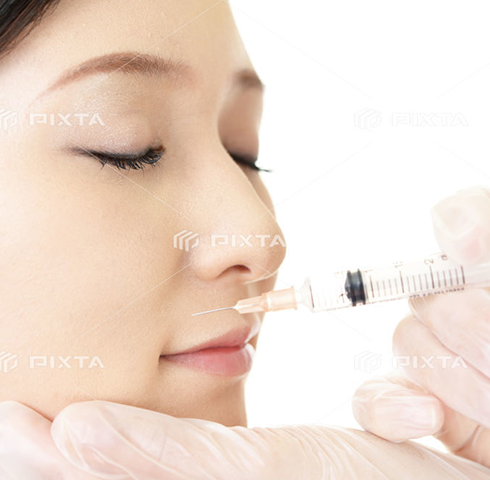
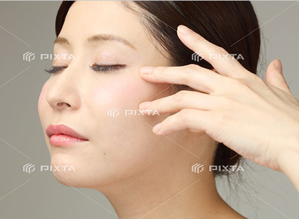

表情ジワに 、眉毛を無意識に上に持ち上げる癖のある額のシワ、いつも怒っている印象や神経質な印象を与える眉間のシワ、笑っていることが多い印象を与える頬から目尻の笑いジワや口元のいろいろな動きで生じる口周りのシワが代表的なものとして挙げられます。
そして、それらは長年の表情と加齢による皮膚のたるみも重なって深いシワとなり、普通の表情でもくっきりとシワが残ってしまいます。
ボツリヌストキシンとは、以前は米国食品衛生局(FDA)で認可されていた米国アラガン社で製造されたものでしたが、現在 、日本アラガン社 「ボトックスビスタ」という日本の厚生労働省から眉間の表情じわに対して承認を受けた安全性 高い薬を使用しております。
ボツリヌストキシンとは、食中毒で知られるボツリヌス菌毒素から抽出したたんぱく質の一種で、実際に使用するものは毒素を抜いており、かつごく微量のため食中毒の心配はありません。
元来、眼瞼痙攣や斜頸などに使われており安全性は確立しているもので、それを美容治療に応用されてきました。
このボツリヌストキシンを表情が作られる筋肉に注射することによって筋肉の力が弱まってシワを目立たなくさせてあげます。


シワ
Wrinkle
ホーム ＞ シワ
ボツリヌストキシン・ヒアルロン酸



ボツリヌストキシンによるシワ伸ばし
Botulinum toxin
ボツリヌストキシン 効果
表情ジワの改善
この効果が一般的に知られているもので一番施行されるものです。 注射後、数日で効果が表れ1˜2週間で安定します。
持続期間 、個人差もありますが4 ˜7か月くらいで、少しずつシワが表れてきます。
多汗症の改善
多汗の部位、わきの下などにボツリヌストキシンを局所に注射することにより、
神経・筋あるいは神経・汗腺接合部を遮断して、局所の筋弛緩あるいは発汗抑制を起こします。
小顔
咬むときに張る咬筋に対して注射することにより、その咬筋自体が小さくなり小顔になります。 咬筋が張っている人に効果的です。
部分痩せ
ふくらはぎなどの筋肉が張っている人に対して、注射することにより小顔と同様筋肉が小さくなり細くなります。
ヒアルロン酸によるシワ伸ばし
Hyaluronic
ヒアルロン酸とは、本来皮膚の真皮内に存在するもので、それを人工的に作成され たものをシワやくぼみに注射します。
半年から1年くらいで吸収してしまいますが、アレルギー反応が非常に少なく安全性が高いものです。
額・眉間・目尻・ほうれい線、口唇周囲のしわ・鼻・アゴ・くちびるのプチ整形に。
当院では、承認を受けたアラガン社のジュビダームビスタを使用しております。

- リスク・副作用
１・内出血
目元や口元では内出血が生じる可能性があります。内出血にもよりますが、数日～1週間くらいで消失します。
２・炎症反応
注入後、腫れやむくみ、赤みなどが生じる可能性があります。通常は一時的で改善します。
３・アレルギー反応
注入後時間経過で、稀にアレルギー反応が生じる可能性があります。その場合、抗アレルギー剤や分解注射にて改善します。
‐ 東京で顔のシワ取り相談ならエルテ大塚クリニック
お顔のシワにお悩みなら
東京都豊島区の美容外科・形成外科 エルテ大塚クリニックへ。
当院では、ボトックス注射・ヒアルロン酸によるシワ取りをご提供しております。
丁寧にカウンセリングを行い、先進美容医療に基づいた患者様一人ひとりに合わせた最適な施術プランで、お肌が本来持っている美しさを引き出すお手伝いをします。
セルフでのスキンケアでは改善できない肌・顔のトラブル、お気軽にお問い合わせください。
シワ取りのお値段については、「料金表」のページをご覧ください。
東京で顔のシワ取り相談なら美容外科・形成外科 エルテ大塚クリニック。
- 東京でシミ取りなら美容外科 エルテ大塚クリニック
クリニック名
美容外科・形成外科 エルテ大塚クリニック
住所
〒170-0004 東京都豊島区北大塚2-15-10ジュンエイビル3F
電話番号
03-3949-7955
アクセス
JR山手線大塚駅北口30秒
北口を出るとカプセルイン大塚という大きな看板のある8階建てのビルの3Fに入っていますので北口からすぐに見えます。
北口を出るとカプセルイン大塚という大きな看板のある8階建てのビルの3Fに入っていますので北口からすぐに見えます。
診療時間
AM10:00〜PM1:00 PM2:00〜PM7:00
休診日
毎週日曜日・水曜日 (祝日の診療日はPM4:00まで)
URL
https://www.erte-oc.com/